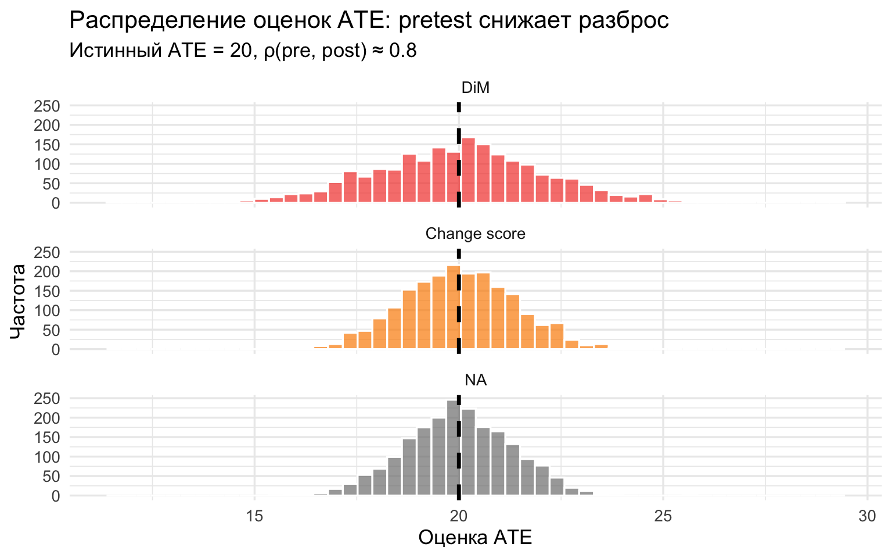
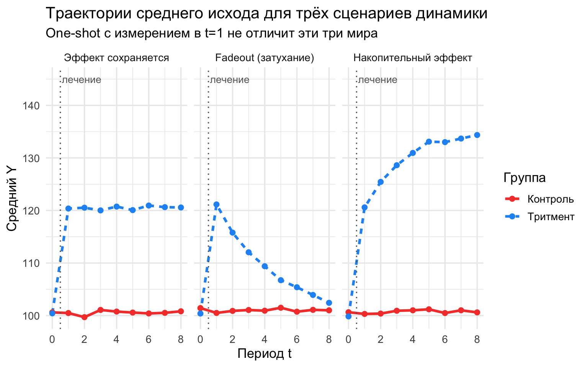
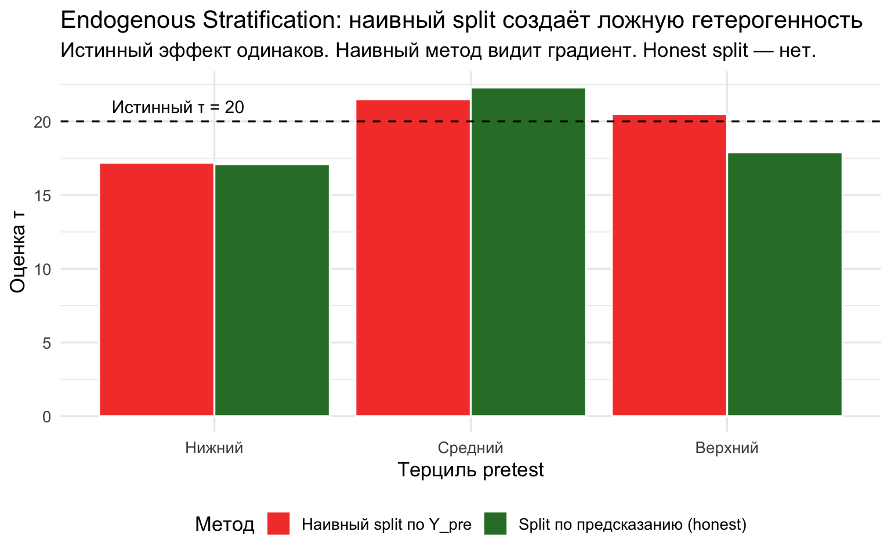
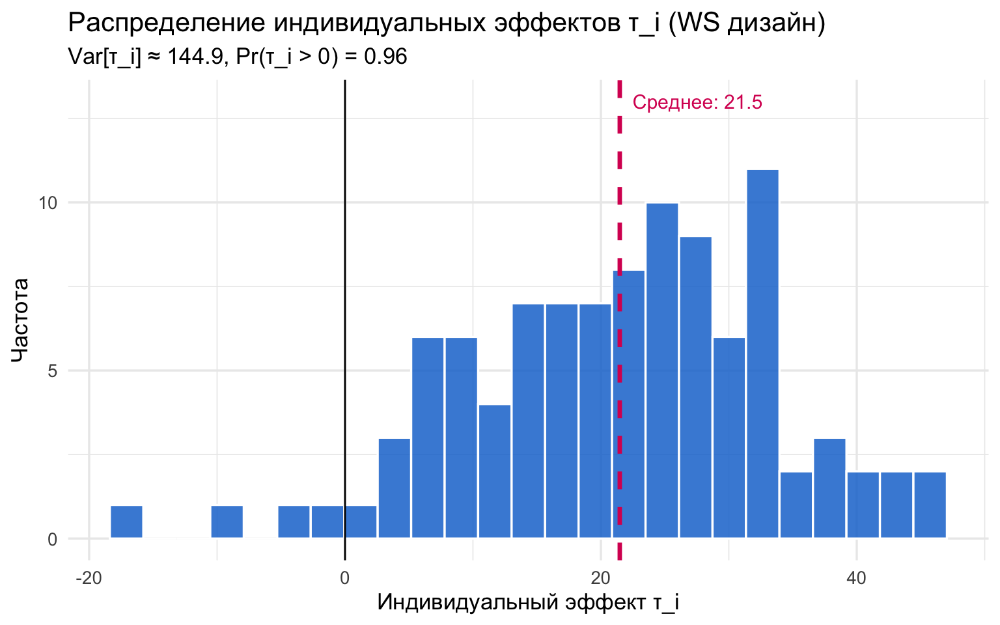
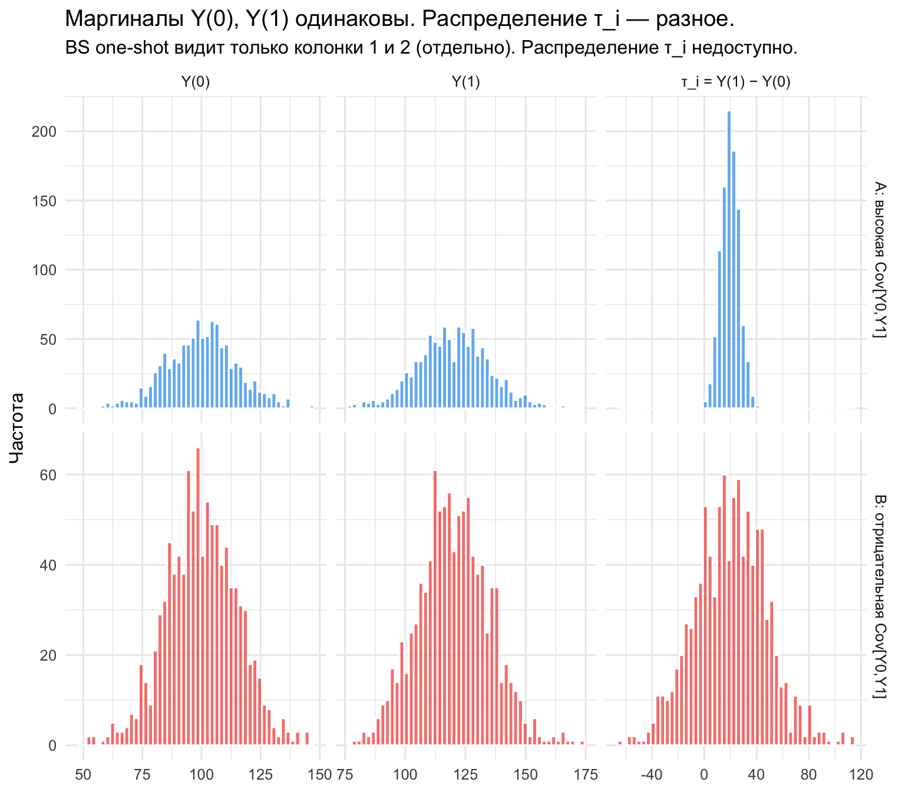

library(ggplot2) # визуализация
library(dplyr) # таблицы, группировки, summarise(), mutate()
library(tidyr) # pivot_longer / pivot_wider
library(MASS) # mvrnorm — для совместного распределения (Y0, Y1)4 Продольные эксперименты, ESC и внутрисубъектные дизайны
В прошлом практикуме мы работали с одномоментным межсубъектным RCT (one-shot between-subject, BS): каждый предприниматель получал одно назначение, и исход измерялся один раз. Такой дизайн оценивает ATE и CATE по наблюдаемым ковариатам \(X\), но не отвечает на пять вопросов, которые реально задаёт политика:
- Насколько эффект варьируется между людьми? Кто именно выиграл? (идиосинкратическая гетерогенность: \(\text{Var}[\tau_i]\), \(\Pr(\tau_i>0)\))
- Эффект растёт, стабилен или затухает со временем? (динамика)
- Эффект на тесты через год — хорошо, а на зарплату через 20 лет? (долгосрочные исходы)
- Это эффект самого воздействия — или реакции на новизну и наблюдение? (поведенческие механизмы)
- Что будет, если воздействие повторить?
Полезно различать два рода гетерогенности. Гетерогенность по наблюдаемым \(X\) — CATE — доступна и в one-shot дизайне (взаимодействия, причинные леса). Идиосинкратическая гетерогенность — разброс \(\tau_i\) внутри ячейки \(X = x\) — требует величины \(\text{Cov}[Y(0), Y(1)]\), которая в one-shot не идентифицируется в принципе: это фундаментальная проблема причинного вывода в самом остром виде.
Чтобы получить ответы, нужно добавить время — либо к измерению исхода (ось \(Y\) — продольные дизайны, longitudinal), либо к назначению воздействия (ось \(D\) — внутрисубъектные дизайны, within-subject, WS). В этом практикуме мы по очереди разберём:
- Baseline + posttest: насколько претест снижает \(\text{SE}(\hat\tau)\) через ANCOVA по сравнению с разностью средних.
- Change score vs ANCOVA: когда лучше работает разность \(\Delta Y\), а когда — регрессия с претестом как контролем.
- Fadeout: эффект может расти, стабилизироваться или затухать — что увидит one-shot и что — продольный дизайн.
- Долгосрочные исходы: суррогаты (surrogates) и экспериментальная коррекция селекции (experimental selection correction, ESC) — теоретический блок.
- Эндогенная стратификация: классическая ловушка при оценке гетерогенности по базовому уровню.
- Within-subject дизайн: как один и тот же субъект, проходящий через \(D=0\) и \(D=1\), идентифицирует \(\tau_i\).
- Идиосинкратическая гетерогенность: что значит «совместное распределение \((Y(0), Y(1))\) не идентифицируется» в one-shot — и как WS это решает.
Классические примеры того, что даёт продольность: Andreoni (1988) по 10 раундам игры в общественное благо отличил обучение от альтруизма (вклады падают — доминирует обучение); Miguel и Kremer (2004) по нескольким годам наблюдений выявили экстерналии дегельминтизации между школами; программа Perry Preschool с наблюдением участников до 40 лет дала знаменитые оценки долгосрочных эффектов дошкольного образования на зарплату и преступность — без продольного дизайна они были бы невозможны.
set.seed(42)4.1 Baseline + posttest: насколько pretest снижает SE
Вспомним постановку с микрокредитованием. Теперь у нас есть два измерения выручки: \(Y_{i,\text{pre}}\) (до программы) и \(Y_{i,\text{post}}\) (через год после). Лечение \(D_i\) назначается случайно в промежутке между двумя измерениями.
Ключевая нотационная тонкость: \(Y_{i,\text{pre}}\) — это реальное измерение до лечения (наблюдается для всех), а \(Y_i(0)\) — это потенциальный исход в пост-периоде без лечения (контрфактуальный для тех, кого лечили). Связь между ними — допущение, а не тождество: претест полезен для идентификации, только если он служит прокси для \(Y(0)\) (формализуется как «нет эффекта времени» \(\mathbb{E}[Y_{\text{post}}(0)] = \mathbb{E}[Y_{\text{pre}}]\) или как параллельные тренды в духе разности разностей).
Зачем вообще нужен базовый замер (baseline)? Три выигрыша:
- точность: претест — мощная ковариата, сильно снижающая остаточную дисперсию (главный сюжет этого раздела);
- проверка рандомизации: если \(\bar Y_{\text{pre}}\) различается между группами — жеребьёвка подвела (формально это то же, что проверка предтрендов в разности разностей);
- гетерогенность по стартовому уровню: можно спросить, помогает ли программа сильнее тем, кто начинал с низкого уровня (об опасностях этого — ниже, в разделе про эндогенную стратификацию).
Цена: второе измерение стоит денег, а само пре-измерение может изменить поведение — эффект тестирования (testing effect), к которому мы вернёмся в конце раздела.
Полезно сразу увидеть механику. Запишем модель исхода с индивидуальным уровнем: \(Y_{it} = \mu_i + \alpha_t + \tau D_{it} + \varepsilon_{it}\). При рандомизации \(D \perp \mu\), поэтому несмещённость любой разумной оценки гарантирована — индивидуальная гетерогенность \(\mu_i\) не смещает, а раздувает дисперсию: в оценке по разности средних \(\sigma^2_\mu\) целиком сидит в остатке. Идея baseline: \(Y_{i,\text{pre}}\) тоже содержит \(\mu_i\), значит, им можно «вычесть» \(\mu_i\) из остатка. Это сюжет не про идентификацию, а про точность.
Простейшая оценка эффекта без pretest — разность средних (difference-in-means, DiM):
\[\hat\tau_{\text{DiM}} = \bar Y_{\text{post}}\mid D{=}1 \;-\; \bar Y_{\text{post}}\mid D{=}0.\]
С pretest у нас есть два альтернативных подхода:
- Change score (разность «после минус до»): \(\hat\tau_{\Delta} = \overline{\Delta Y}\mid D{=}1 - \overline{\Delta Y}\mid D{=}0\), где \(\Delta Y_i = Y_{i,\text{post}} - Y_{i,\text{pre}}\).
- ANCOVA (analysis of covariance): регрессия \(Y_{i,\text{post}} = \alpha + \tau D_i + \beta Y_{i,\text{pre}} + \varepsilon_i\).
Теоретически, при идеальной рандомизации \(\text{SE}(\hat\tau)\) у ANCOVA составляет долю \(\sqrt{1-\rho^2}\) от SE разности средних, где \(\rho = \text{Cor}(Y_{\text{pre}}, Y_{\text{post}})\). Проверим это симуляцией.
# Функция: один прогон симуляции
# rho — корреляция между pretest и posttest (через общий «уровень» alpha_i)
# Возвращает три оценки tau: DiM, change score, ANCOVA
simulate_baseline <- function(N = 200, tau_true = 20, rho_target = 0.8) {
# Индивидуальный «уровень» — общий драйвер pre и post
# Чем больше его доля в дисперсии, тем выше корреляция
# Var(pre) = sigma_alpha^2 + sigma_eps^2; Cor = sigma_alpha^2 / Var(pre)
sigma_total <- 15
sigma_alpha <- sqrt(rho_target) * sigma_total
sigma_eps <- sqrt(1 - rho_target) * sigma_total
alpha_i <- rnorm(N, mean = 150, sd = sigma_alpha)
Y_pre <- alpha_i + rnorm(N, sd = sigma_eps)
D_i <- rbinom(N, 1, 0.5)
Y_post <- alpha_i + tau_true * D_i + rnorm(N, sd = sigma_eps)
df <- tibble(Y_pre = Y_pre, Y_post = Y_post, D_i = D_i)
# DiM: разность средних по post
tau_dim <- mean(df$Y_post[df$D_i == 1]) - mean(df$Y_post[df$D_i == 0])
# Change score: разность средних по delta
delta <- df$Y_post - df$Y_pre
tau_cs <- mean(delta[df$D_i == 1]) - mean(delta[df$D_i == 0])
# ANCOVA: коэффициент при D_i из регрессии с контролем pretest
fit <- lm(Y_post ~ D_i + Y_pre, data = df)
tau_anc <- coef(fit)["D_i"]
c(DiM = tau_dim, Change = tau_cs, ANCOVA = tau_anc)
}# Monte Carlo: 2000 прогонов, считаем выборочную SE каждой оценки
reps <- 2000
est_matrix <- t(replicate(reps, simulate_baseline(N = 200, rho_target = 0.8)))
ses <- apply(est_matrix, 2, sd)
means <- apply(est_matrix, 2, mean)
results <- tibble(
Метод = c("DiM (без pretest)", "Change score", "ANCOVA"),
`Средняя оценка` = round(means, 2),
`SE (по 2000 прогонам)` = round(ses, 3),
`Отн. к DiM` = round(ses / ses[1], 3)
)
knitr::kable(
results,
caption = "Сравнение трёх оценок ATE: pretest снижает SE через ANCOVA"
)| Метод | Средняя оценка | SE (по 2000 прогонам) | Отн. к DiM |
|---|---|---|---|
| DiM (без pretest) | 19.98 | 2.090 | 1.000 |
| Change score | 20.00 | 1.369 | 0.655 |
| ANCOVA | 19.99 | 1.298 | 0.621 |
df_plot <- as_tibble(est_matrix) %>%
pivot_longer(everything(), names_to = "Метод", values_to = "tau_hat") %>%
mutate(Метод = factor(Метод, levels = c("DiM", "Change", "ANCOVA"),
labels = c("DiM", "Change score", "ANCOVA")))
ggplot(df_plot, aes(x = tau_hat, fill = Метод)) +
geom_histogram(bins = 50, alpha = 0.7, position = "identity", color = "white") +
geom_vline(xintercept = 20, color = "black", linewidth = 1.2, linetype = "dashed") +
facet_wrap(~ Метод, ncol = 1) +
scale_fill_manual(values = c("DiM" = "#F44336",
"Change score" = "#FB8C00",
"ANCOVA" = "#2E7D32")) +
labs(
title = "Распределение оценок ATE: pretest снижает разброс",
subtitle = "Истинный ATE = 20, ρ(pre, post) ≈ 0.8",
x = "Оценка ATE", y = "Частота"
) +
theme_minimal(base_size = 13) +
theme(legend.position = "none")
Все три оценки несмещённые (среднее ≈ 20), но точность разная:
- DiM игнорирует pretest и имеет наибольшую SE.
- Change score (разность \(\Delta Y\)) использует pretest, но жёстко — предполагает \(\beta = 1\).
- ANCOVA оценивает \(\beta\) из данных, и при \(\rho^2 = 0.64\) её SE составляет \(\sqrt{1-0.64} = 0.6\) от SE DiM — по точности это как увеличить выборку почти втрое (\(1/0.36 \approx 2.8\)).
Все оценщики с претестом сводятся к одному уравнению \(Y_{\text{post}} = \alpha + \tau D + \beta Y_{\text{pre}} + u\) и различаются только тем, что делают с \(\beta\):
- Путь 1: зафиксировать \(\beta \equiv 1\). Сюда попадают сразу три «обличия» одного оценщика, совпадающие при двух периодах и сбалансированном RCT: разность разностей (difference-in-differences, DiD), change score (регрессия \(\Delta Y_i\) на \(D_i\)) и панельная регрессия с двумя видами фиксированных эффектов (two-way fixed effects, TWFE). Содержательно \(\beta = 1\) означает: «всё, что отличает единицу в нулевом периоде, переносится в следующий один к одному».
- Путь 2: оценить \(\hat\beta\) из данных — это ANCOVA. Если исход «стабильный», \(\hat\beta \approx 1\) и пути совпадают; если исход шумный, \(\hat\beta < 1\), и ANCOVA вычитает только ту часть претеста, которая действительно является сигналом.
Когда change score лучше ANCOVA, а когда — наоборот?
Ответ определяется истинной персистентностью исхода \(\beta^*\):
| \(\beta^*\) | Содержательно | Что лучше |
|---|---|---|
| \(\beta^* = 1\) | Полная персистентность: отличия переносятся один к одному (рост, IQ, позиция в рейтинге) | Все оценщики эквивалентны |
| \(\beta^* < 1\) | Регрессия к среднему (mean reversion) — типичный случай: разовый тест, дневная выручка, настроение | ANCOVA эффективнее; DiD/change score «перевычитают» |
| \(\beta^* > 1\) | Расходящиеся траектории (накопление, неравенство) | ANCOVA корректирует; DiD/change score недовычитают |
Эмпирический факт (McKenzie 2012): в полевых RCT в развивающихся странах \(\hat\beta\) для большинства исходов лежит в диапазоне 0.3–0.7 — то есть \(\beta^* = 1\) редкость, а не норма.
Практические правила, когда \(\beta^*\) неизвестна:
- Оцените \(\hat\rho = \widehat{\text{Cor}}(Y_{\text{pre}}, Y_{\text{post}})\) на контрольной группе. При \(\hat\rho > 0.8\) выбор не критичен; при \(\hat\rho \approx 0.5\) ANCOVA заметно точнее; при \(\hat\rho \to 0\) претест почти бесполезен.
- Показывайте обе оценки. Совпали — выбор не важен; разошлись — это ценная диагностика (реверсия к среднему или нарушение параллельных трендов), а не недостаток.
- По умолчанию — ANCOVA (правило McKenzie): для нового эксперимента с двумя периодами и без особых причин верить в \(\beta^* = 1\).
Интуиция на примере: \(Y_{\text{pre}}\) — балл пробного ЕГЭ, \(Y_{\text{post}}\) — реального. У слабых учеников в пробном случается «провал» из-за нервов, и в реальном они подтянулись бы и без программы (\(\beta^* < 1\)). ANCOVA это видит и не приписывает «подтягивание» программе; change score — приписывает.
CUPED: та же ANCOVA в промышленном A/B-тестировании
В онлайн-экспериментах метод снижения дисперсии CUPED (controlled-experiment using pre-experiment data) (Deng и др. 2013) корректирует метрику \(Y^{\text{CUPED}} = Y - \theta(X - \bar X)\), где \(X\) — любая доэкспериментальная ковариата, а \(\theta = \text{Cov}(Y, X)/\text{Var}(X)\). Алгебраически это в точности ANCOVA, переписанная как «корректировка метрики». Новое по сути одно: \(X\) не обязан быть прошлым значением \(Y\) — на практике берут агрегат за 30 дней до эксперимента (корреляция выше, чем у одного замера) или несколько ковариат сразу. При типичных для индустрии \(\rho \approx 0.5\)–\(0.7\) это даёт минус 30–50% к стандартной ошибке. Требование то же, что и всегда: ковариата обязана быть доэкспериментальной, иначе оценка смещена.
Сколько волн измерений покупать? Правило McKenzie
При двух периодах \(\text{V}(\hat\tau_{\text{DiM}}) = 2\sigma^2/N\), а с одним претестом \(\text{V}(\hat\tau) = 2\sigma^2(1-\rho)/N\) — один базовый замер срезает дисперсию в \((1-\rho)\) раз (при \(\rho = 0.6\) — на 60%). Дополнительные пост-периоды дают убывающую отдачу: при высоком \(\rho\) новое измерение почти дублирует старое. Выводы McKenzie (2012): один baseline почти всегда оправдан; вторая и третья волна пост-измерений добавляют всё меньше; бюджет обычно выгоднее тратить на больше единиц, а не больше волн.
4.1.1 Эффект тестирования и дизайн Соломона
Само пре-измерение может стать воздействием: анкета о финансовой грамотности заставляет задуматься о сбережениях, и реакция на последующее предложение финансового продукта уже не та, что была бы «с улицы». Это эффект тестирования (testing effect / sensitization), и он угрожает внешней валидности: программа в реальности разворачивается на людях, не проходивших никаких претестов.
Решение — дизайн Соломона (Solomon four-group design) (Solomon 1949): рандомизировать дважды — сначала «измерять ли baseline», затем внутри каждой половины «воздействовать ли». Четыре ячейки дают четыре контраста:
| Контраст | Что измеряет |
|---|---|
| \(\bar Y_1 - \bar Y_2\) (с baseline) | эффект воздействия на протестированных — «стандартная» оценка |
| \(\bar Y_3 - \bar Y_4\) (без baseline) | эффект на «людях с улицы» — то, что увидит реальная программа |
| \((\bar Y_1 - \bar Y_2) - (\bar Y_3 - \bar Y_4)\) | взаимодействие «претест × воздействие» — величина искажения |
| \(\bar Y_2 - \bar Y_4\) | чистый эффект самого претеста |
Цена — вчетверо больше единиц (или отказ от baseline для половины выборки), поэтому дизайн применяют при серьёзных подозрениях на эффект тестирования.
4.1.2 Ступенчатое внедрение (staggered adoption)
Часто программа «раскатывается» постепенно: единицы начинают получать воздействие в разные моменты \(G_i \in \{1, \dots, T, \infty\}\) (\(\infty\) — никогда). Это бывает единственно возможным вариантом (бюджет, этика, логистика) и само по себе полезно: идентифицируется динамика эффекта по «возрасту воздействия», а параллельность претрендов между когортами проверяема. Классический пример — Miguel и Kremer (2004), где школы получали дегельминтизацию в разные годы.
Подводный камень: стандартный TWFE-оценщик \(Y_{it} = \mu_i + \alpha_t + \beta D_{it} + \varepsilon_{it}\) при гетерогенных во времени эффектах не идентифицирует осмысленный средний эффект — «плохие» сравнения уже обработанных с поздно обработанными получают отрицательные веса и могут даже перевернуть знак (Goodman-Bacon 2021). Современный консенсус — использовать «чистые» оценщики: (Callaway и Sant’Anna 2021; Chaisemartin и D’Haultfœuille 2020; Sun и Abraham 2021; Borusyak, Jaravel, и Spiess 2024). А если исследователь сам решает, кого запускать когда, распределением когорт можно управлять: для долгосрочного среднего эффекта оптимальна U-образная форма (масса в первой и последней когортах), а не равномерная и не «пирамида» (Xiong и др. 2024).
Вопросы для размышления:
- Что произойдёт с относительной эффективностью ANCOVA при \(\rho = 0\)? При \(\rho = 1\)?
- Почему ANCOVA несмещённая при рандомизации, даже если истинная связь \(Y_{\text{pre}} \to Y_{\text{post}}\) нелинейна?
- Что случится с DiM и ANCOVA, если есть сильный временной тренд (например, рост выручки на 10 у всех)?
Возможные ответы
1. ANCOVA при \(\rho = 0\) и \(\rho = 1\). При \(\rho = 0\) pretest не несёт информации о post, и ANCOVA вырождается в DiM (выигрыша по SE нет, но и потерь тоже). При \(\rho = 1\) остаточная дисперсия исчезает, и \(\text{SE}(\hat\tau)\) у ANCOVA обращается в ноль при любом фиксированном \(N\) — тогда как у DiM она остаётся положительной.
2. Несмещённость ANCOVA при нелинейности. При рандомизации \(D_i \perp\!\!\!\perp Y_{i,\text{pre}}\), поэтому коэффициент при \(D_i\) оценивается без предположения о форме связи \(Y_{\text{pre}} \to Y_{\text{post}}\). Линейность нужна только для эффективности, не для несмещённости.
3. Сильный тренд. DiM остаётся несмещённой (тренд бьёт по обоим группам одинаково при рандомизации). Change score тоже не страдает — тренд вычитается. ANCOVA также робастна: тренд уходит в константу \(\alpha\), не в \(\tau\).
4.2 Fadeout: динамика эффекта во времени
One-shot RCT с измерением через год увидит «эффект программы +20 тыс.». Но что, если через три года эффект ослабнет до +5? Это fadeout — затухание во времени, особенно характерное для образовательных интервенций (Heckman и Kautz 2013) и поведенческих nudge.
set.seed(7)
N <- 500
# Сценарий: одинаковый «мгновенный» эффект +20, но три траектории динамики
# - constant: эффект сохраняется
# - fadeout: затухает экспоненциально
# - growing: накапливается со временем (эффект «прорастает»)
t_grid <- 0:8 # 9 периодов: до лечения и 8 после
simulate_dynamics <- function(N, decay_type) {
alpha_i <- rnorm(N, mean = 100, sd = 12)
D_i <- rbinom(N, 1, 0.5)
# tau(t) — эффект в период t (лечение в момент t=1)
tau_t <- switch(
decay_type,
constant = c(0, rep(20, 8)),
fadeout = c(0, 20 * exp(-0.3 * (1:8 - 1))),
growing = c(0, 20 + 15 * (1 - exp(-0.4 * (1:8 - 1))))
)
# Y_{i,t} = alpha_i + tau_t * D_i + epsilon
panel <- expand.grid(i = 1:N, t = t_grid) %>%
arrange(i, t) %>%
mutate(
D_i = rep(D_i, each = length(t_grid)),
alpha_i = rep(alpha_i, each = length(t_grid)),
tau = tau_t[t + 1], # индексируем с 1
Y = alpha_i + tau * D_i + rnorm(n(), sd = 5),
сценарий = decay_type
)
panel
}
panel_all <- bind_rows(
simulate_dynamics(N, "constant"),
simulate_dynamics(N, "fadeout"),
simulate_dynamics(N, "growing")
)
# Среднее наблюдаемого Y по группе и периоду
panel_means <- panel_all %>%
group_by(сценарий, t, D_i) %>%
summarise(Y_mean = mean(Y), .groups = "drop") %>%
mutate(Группа = if_else(D_i == 1, "Тритмент", "Контроль"))
ggplot(panel_means, aes(x = t, y = Y_mean, color = Группа, linetype = Группа)) +
geom_line(linewidth = 1.2) +
geom_point(size = 2) +
geom_vline(xintercept = 0.5, linetype = "dotted", color = "grey40") +
annotate("text", x = 0.6, y = 145, label = "лечение",
hjust = 0, size = 3.5, color = "grey40") +
facet_wrap(~ сценарий, labeller = as_labeller(c(
constant = "Эффект сохраняется",
fadeout = "Fadeout (затухание)",
growing = "Накопительный эффект"
))) +
scale_color_manual(values = c("Тритмент" = "#2196F3", "Контроль" = "#F44336")) +
labs(
title = "Траектории среднего исхода для трёх сценариев динамики",
subtitle = "One-shot c измерением в t=1 не отличит эти три мира",
x = "Период t", y = "Средний Y"
) +
theme_minimal(base_size = 13)
# Что увидит one-shot с измерением в t=1 в каждом из миров?
oneshot_t1 <- panel_all %>%
filter(t == 1) %>%
group_by(сценарий, D_i) %>%
summarise(Y_mean = mean(Y), .groups = "drop") %>%
summarise(`tau (t=1)` = Y_mean[D_i == 1] - Y_mean[D_i == 0],
.by = сценарий)
# А что увидим, если посмотрим в t=8?
oneshot_t8 <- panel_all %>%
filter(t == 8) %>%
group_by(сценарий, D_i) %>%
summarise(Y_mean = mean(Y), .groups = "drop") %>%
summarise(`tau (t=8)` = Y_mean[D_i == 1] - Y_mean[D_i == 0],
.by = сценарий)
comparison <- left_join(oneshot_t1, oneshot_t8, by = "сценарий") %>%
mutate(across(where(is.numeric), ~ round(., 1)))
knitr::kable(
comparison,
caption = "Один и тот же мгновенный эффект (+20 в t=1) — но через 8 периодов всё разное"
)| сценарий | tau (t=1) | tau (t=8) |
|---|---|---|
| constant | 19.9 | 19.8 |
| fadeout | 20.6 | 1.4 |
| growing | 20.3 | 33.8 |
В момент \(t=1\) все три сценария дают одинаковую оценку эффекта (~20). Но в \(t=8\) они расходятся:
- Constant: эффект всё ещё +20 (программа закрепилась).
- Fadeout: эффект упал до +1–3 (программа не оставила следа).
- Growing: эффект вырос до ≈ +34 (программа дала отложенный эффект).
Без панельных измерений мы не можем отличить эти миры — а они требуют совершенно разной политики. Это и есть один из ответов на вопрос «зачем нам ось \(Y\)» из лекции.
Вопросы для размышления:
- В каких содержательных контекстах вы ожидаете fadeout, а в каких — growing?
- Допустим, мы наблюдаем эффект +20 в t=1 и +5 в t=8. Что это даёт для политики?
- Как поведёт себя ANCOVA, если мы используем \(Y_{\text{pre}}\) как контроль для \(Y_{t=8}\), а fadeout сильный?
Возможные ответы
1. Fadeout vs growing. Fadeout типичен для краткосрочных нудж (напоминания о вакцинации), эффектов новизны (Hawthorne), быстро забывающихся обучающих интервенций. Growing — для программ, инвестирующих в человеческий капитал (Perry Preschool: эффект слабо виден на тестах, но проявляется на зарплате через 20 лет), для накопительных социальных эффектов (peer learning), для микрокредитов, где бизнес растёт постепенно.
2. +20 в t=1, +5 в t=8. Это fadeout. Содержательно — программа работает, но эффект не закрепляется. Это не значит, что программа бесполезна (она дала временный буст), но это значит, что нужно либо повторять, либо разбираться, почему не закрепилось (нет ли поведенческой адаптации, не закончились ли деньги).
3. ANCOVA с pretest и сильным fadeout. ANCOVA по-прежнему даст несмещённую оценку среднего эффекта в момент t=8 — это просто +5. Но интерпретация будет узкой: «средний эффект через 8 периодов». Это не «эффект программы вообще» — последний просто не существует как одно число.
4.3 Долгосрочные исходы: суррогаты и экспериментальная коррекция селекции
Этот раздел — теоретический: он связывает продольные дизайны с вопросом о долгосрочных эффектах.
Политика принимает решения по первичным исходам — выпуск из школы, заработок к 30 годам, продолжительность жизни. Но у исследователя лаг 10–40 лет, финансирование заканчивается раньше, а участники теряются. Доступны промежуточные исходы — тесты, биомаркеры, оценки, которые реагируют быстро и коррелируют с первичным исходом. Соблазн: оценить эффект на промежуточном исходе и «перенести» его на первичный. Когда это законно?
Критерий Прентиса (Prentice 1989): промежуточная переменная \(Y^S\) — валидный статистический суррогат (statistical surrogate) для первичного исхода \(Y^P\), если эффект воздействия на \(Y^P\) полностью опосредован \(Y^S\): \(Y^P \perp D \mid Y^S\) — на DAG нет ни прямой стрелки \(D \to Y^P\), ни путей в обход суррогата. Тогда работает рецепт из трёх шагов: (1) на исторических данных, где видны и \(Y^S\), и \(Y^P\), оценить функцию \(\hat m(y^s) = \widehat{\mathbb{E}}[Y^P \mid Y^S = y^s]\); (2) в эксперименте построить каждому прогноз \(\hat Y^P_i = \hat m(Y^S_i)\); (3) сравнить средние прогнозы по группам. Долгосрочный исход в самом эксперименте не нужен.
Опасность в том, что при нарушении критерия — если есть прямой канал \(D \to Y^P\) мимо суррогата — смещение имеет неизвестный знак и величину. Учебный пример: программа «натаскивает» на тест (суррогат растёт), не развивая навыки (зарплата не растёт). Медицинский: препарат торцетрапиб снижал «плохой» холестерин LDL (суррогат), но в большом RCT повышал смертность — действовал через каналы, суррогатом не охваченные (Barter и др. 2007). Ослабить требование помогает суррогатный индекс (surrogate index) (Athey и др. 2019): вместо одного суррогата — корзина \(\{Y^{S,1}, \dots, Y^{S,J}\}\), охватывающая все основные каналы (когнитивные навыки, некогнитивные, социальный капитал…), с коэффициентами, оценёнными на исторической выборке.
Экспериментальная коррекция селекции (experimental selection correction, ESC) (Athey, Chetty, и Imbens 2025) идёт дальше: она комбинирует малый эксперимент (воздействие рандомизировано, виден только короткий исход \(Y^S\)) и большие наблюдаемые данные (видны \(D\), \(Y^S\) и долгий \(Y^P\), но воздействие не случайно). Мотивирующий парадокс: эксперимент STAR даёт эффект малых классов на тесты +0.19 SD, а OLS по административным данным Нью-Йорка — минус 0.12 SD и −1.76 п.п. к вероятности выпуска: в малые классы там направляют детей с особыми потребностями, и никакой набор наблюдаемых контролей это смещение не убирает.
Идея ESC: оценить эффект на короткий исход в эксперименте, построить в наблюдаемых данных остатки \(\hat\alpha^S_i\) короткого исхода (очищенные от воздействия и ковариат) и включить их контрольной функцией (control function) в регрессию длинного исхода. Ключевое допущение — латентная несмещённость (latent unconfoundedness): все ненаблюдаемые конфаундеры, влияющие на \(Y^P\), действуют через ту же «ось», что ловит их влияние на \(Y^S\) (если два ученика одинаковы по тесту при данных ковариатах — они одинаковы и по невидимым факторам выпуска). Это допущение строго слабее критерия Прентиса: прямой канал \(D \to Y^P\) и скрытые конфаундеры разрешены. Результат для STAR: ESC на данных Нью-Йорка восстанавливает +0.19 SD на тесты и даёт +0.69 п.п. к выпуску — малый дорогой эксперимент плюс большой смещённый датасет дают вывод, который ни одна часть не даёт по отдельности. Идейно ESC — родственник коррекции Хекмана (Heckman 1979) и контрольных функций (Imbens и Newey 2009), но источник экзогенной вариации здесь — сам эксперимент, проведённый на другой выборке.
4.4 Эндогенная стратификация: ловушка гетерогенности по базовому уровню
Когда у нас есть pretest, возникает большой соблазн оценить гетерогенность эффекта по pretest: «помогла ли программа сильнее тем, у кого изначально низкая выручка?» Это содержательно важный вопрос для дизайна политики (targeting).
Здесь прячутся сразу две ловушки — одна грубая и одна тонкая.
4.4.1 Ловушка 1 (грубая): приросты по базовым группам
Наивный практик смотрит на приросты \(Y_{\text{post}} - Y_{\text{pre}}\) по терцилям pretest в группе тритмента: «у слабых прирост огромный, у сильных — почти нулевой, значит, программа помогает отстающим!»
set.seed(2024)
N <- 5000
# Истинная модель: эффект одинаков для всех (+20),
# pretest = alpha_i + шум_1, posttest = alpha_i + tau*D + шум_2.
# Шумы независимы — поэтому низкий Y_pre частично отражает «слабый» alpha_i,
# а частично — случайный отрицательный шок в pre-периоде.
# В post-периоде этот шок «обнуляется» (регрессия к среднему) —
# и прирост маскируется под «большой эффект».
alpha_i <- rnorm(N, mean = 100, sd = 10)
D_i <- rbinom(N, 1, 0.5)
tau <- 20
Y_pre <- alpha_i + rnorm(N, sd = 15)
Y_post <- alpha_i + tau * D_i + rnorm(N, sd = 15)
dat <- tibble(D_i = D_i, Y_pre = Y_pre, Y_post = Y_post) %>%
mutate(
терциль = cut(
Y_pre,
breaks = quantile(Y_pre, c(0, 1/3, 2/3, 1)),
include.lowest = TRUE,
labels = c("Нижний", "Средний", "Верхний")
)
)
gains <- dat %>%
mutate(Группа = if_else(D_i == 1, "Тритмент", "Контроль")) %>%
group_by(терциль, Группа) %>%
summarise(`Средний прирост` = round(mean(Y_post - Y_pre), 1),
.groups = "drop") %>%
pivot_wider(names_from = Группа, values_from = `Средний прирост`)
knitr::kable(
gains,
caption = "Средний прирост Y_post − Y_pre по терцилям pretest. Истинный эффект = 20 во всех терцилях."
)| терциль | Контроль | Тритмент |
|---|---|---|
| Нижний | 15.1 | 32.8 |
| Средний | -0.9 | 20.6 |
| Верхний | -14.1 | 6.7 |
В группе тритмента приросты действительно кричат о «помощи отстающим»: ≈ +33 в нижнем терциле против ≈ +7 в верхнем. Но посмотрите на контрольную группу: тот же градиент (≈ +15 внизу против ≈ −14 наверху) — безо всякой программы. Это чистая регрессия к среднему: в нижний терциль по \(Y_{\text{pre}}\) попали в том числе те, кому в pre-периоде просто не повезло со случайным шоком; в post-периоде шок «обнулился», и их значения подросли сами собой.
Лечится эта ловушка просто: внутри каждого терциля сравниваем тритмент с контролем — реверсия одинаково сидит в обоих плечах и сокращается:
esc_by_arm <- dat %>%
group_by(терциль, D_i) %>%
summarise(mean_post = mean(Y_post), .groups = "drop_last") %>%
summarise(`tau (тритмент − контроль)` = round(
mean_post[D_i == 1] - mean_post[D_i == 0], 1), .groups = "drop")
knitr::kable(
esc_by_arm,
caption = "Разность тритмент − контроль внутри терцилей pretest: эффект ≈ 20 везде."
)| терциль | tau (тритмент − контроль) |
|---|---|
| Нижний | 17.2 |
| Средний | 21.5 |
| Верхний | 20.5 |
Стратификация по претритментной переменной при рандомизации не смещает оценку: внутри терциля лечение по-прежнему случайно. Оговорка одна — «нижний терциль по \(Y_{\text{pre}}\)» не равен «нижнему терцилю по истинному уровню \(\alpha_i\)»: из-за шума группы перемешаны, поэтому интерпретировать такие подгруппы как «действительно слабых» нужно осторожно.
4.4.2 Ловушка 2 (тонкая): страты по предсказанному \(\hat Y(0)\) — endogenous stratification
Настоящая ловушка эндогенной стратификации (Abadie, Chingos, и West 2018) возникает шагом позже. Исследователь хочет группировать не по одному шумному претесту, а по предсказанному беспрограммному исходу \(\hat Y(0)\): строит регрессию \(Y_{\text{post}}\) на претест и другие ковариаты по контрольной группе тех же данных (in-sample) и делит выборку на страты по предсказанию. Звучит разумно — но теперь страты построены с участием собственных остатков контрольных наблюдений: контрольные единицы со случайно низким \(Y_{\text{post}}\) утягиваются предсказанием вниз, в нижней страте контрольное среднее оказывается занижено, и эффект там завышается (в верхней — наоборот). Чем меньше выборка и чем больше ковариат, тем сильнее переобучение и смещение.
set.seed(2024)
# Реалистичный сценарий ACW: небольшая выборка, много ковариат
# (претест + 15 переменных, не несущих информации), страты по предсказанному
# Y(0). Сравниваем in-sample предсказание и честный split-sample.
acw_run <- function(N = 200, p_extra = 15) {
alpha <- rnorm(N, 100, 10)
D <- rbinom(N, 1, 0.5)
Y_pre <- alpha + rnorm(N, sd = 15)
Y_post <- alpha + 20 * D + rnorm(N, sd = 15)
X <- matrix(rnorm(N * p_extra), N,
dimnames = list(NULL, paste0("X", 1:p_extra)))
df <- data.frame(Y_post, Y_pre, D, X)
covs <- c("Y_pre", colnames(X))
# Наивно: предсказание Y(0) обучаем на ВСЕХ контрольных (in-sample)
fit <- lm(reformulate(covs, "Y_post"), data = df[df$D == 0, ])
pred <- predict(fit, newdata = df)
strata <- cut(pred, quantile(pred, c(0, 1/3, 2/3, 1)), include.lowest = TRUE)
naive <- sapply(1:3, function(k)
mean(Y_post[D == 1 & as.integer(strata) == k]) -
mean(Y_post[D == 0 & as.integer(strata) == k]))
# Честно: split-sample — обучаем на половине A, страты и оценка на половине B
half <- sample(rep(c(TRUE, FALSE), length.out = N))
fit_A <- lm(reformulate(covs, "Y_post"), data = df[half & df$D == 0, ])
pred_B <- predict(fit_A, newdata = df[!half, ])
s_B <- cut(pred_B, quantile(pred_B, c(0, 1/3, 2/3, 1)), include.lowest = TRUE)
Y_B <- Y_post[!half]; D_B <- D[!half]
honest <- sapply(1:3, function(k)
mean(Y_B[D_B == 1 & as.integer(s_B) == k]) -
mean(Y_B[D_B == 0 & as.integer(s_B) == k]))
c(naive, honest)
}
# Одна выборка слишком шумная, чтобы увидеть систематику, —
# усредняем по 400 прогонам
acw_res <- rowMeans(replicate(400, acw_run()))
comparison_esc <- tibble(
Страта = c("Нижняя", "Средняя", "Верхняя"),
`Наивно (in-sample)` = round(acw_res[1:3], 1),
`Честно (split-sample)` = round(acw_res[4:6], 1)
)
knitr::kable(
comparison_esc,
caption = "ACW: средняя оценка эффекта по стратам предсказанного Y(0), 400 прогонов (N = 200, 16 ковариат). Истинный эффект = 20 во всех стратах."
)| Страта | Наивно (in-sample) | Честно (split-sample) |
|---|---|---|
| Нижняя | 26.0 | 20.1 |
| Средняя | 19.9 | 20.0 |
| Верхняя | 13.7 | 19.7 |
df_compare <- comparison_esc %>%
pivot_longer(-Страта, names_to = "Метод", values_to = "tau")
ggplot(df_compare, aes(x = Страта, y = tau, fill = Метод)) +
geom_col(position = "dodge", color = "white") +
geom_hline(yintercept = 20, linetype = "dashed", color = "black") +
annotate("text", x = 0.6, y = 21, label = "Истинный τ = 20",
hjust = 0, size = 4) +
scale_fill_manual(values = c("Наивно (in-sample)" = "#F44336",
"Честно (split-sample)" = "#2E7D32")) +
labs(
title = "Endogenous stratification: in-sample страты создают ложную гетерогенность",
subtitle = "Истинный эффект одинаков. In-sample предсказание видит градиент. Split-sample — нет.",
x = "Страта предсказанного Y(0)", y = "Средняя оценка τ"
) +
theme_minimal(base_size = 13) +
theme(legend.position = "bottom")
Наивная in-sample стратификация систематически показывает «эффект сильнее у слабых» (≈ +26 в нижней страте против ≈ +13 в верхней), хотя истинный эффект одинаков. Поправка (Abadie–Chingos–West): строить предсказание \(\hat Y(0)\) на отдельной части данных — split-sample, leave-one-out или repeated split sampling. Тогда стратификация перестаёт быть эндогенной к шуму тех наблюдений, по которым оценивается эффект.
Почему именно split-sample?
Когда предсказание \(\hat Y(0)\) обучено на тех же контрольных наблюдениях, по которым потом считается эффект, модель «знает» их случайный шум: наблюдение с отрицательным остатком получает заниженное предсказание и системно попадает в нижнюю страту. Стратификация становится эндогенной к той самой ошибке, которая входит в оценку эффекта.
Когда предсказание строится на отдельной части данных, оно не «знает» индивидуальный шум того человека, чей эффект мы потом оцениваем. Корреляция между splitting variable и шумом разрывается. Это та же идея, что и в double machine learning: разделяй обучение и оценку.
См. также Athey & Imbens (2016), Wager & Athey (2018) для современных аналогов — causal trees, causal forests.
Вопросы для размышления:
- Почему ESC проявляется именно при оценке гетерогенности, а не для ATE?
- Можно ли вместо split-sample использовать LOO (leave-one-out)? Какие плюсы и минусы?
- Если бы у нас было два pretest (например, \(Y_{i,-2}\) и \(Y_{i,-1}\)), помогло бы это решить ESC?
Возможные ответы
1. Почему ATE не страдает. ATE усредняется по всей выборке, и завышение в нижней страте компенсируется занижением в верхней (в таблице выше среднее по трём стратам ≈ 20). Гетерогенность же — это разница между стратами, и здесь смещения складываются, а не сокращаются.
2. LOO vs split-sample. LOO даёт менее «зашумлённые» страты (для каждого наблюдения предсказание обучено почти на всей выборке), но вычислительно тяжелее. Split-sample проще, но «выбрасывает» половину данных для оценки. Современный компромисс — cross-fitting (как в DML): несколько проходов, в каждом меняются роли частей.
3. Два pretest. Помогло бы! При двух измерениях мы можем оценить индивидуальный \(\hat\alpha_i\) точнее (среднее по двум pretest имеет меньший шум). Тогда и иллюзия реверсии на приростах, и переобучение предсказания \(\hat Y(0)\) ослабнут. Это, по сути, аналог fixed effects в панели.
4.5 Within-subject дизайн: каждый — сам себе контроль
Продольные дизайны (Часть I лекции) добавляют время к оси \(Y\): каждый получает одно лечение, но измеряется несколько раз. Это уменьшает SE и даёт динамику.
Внутрисубъектный (within-subject, WS) дизайн — это другая ось: время добавляется к оси \(D\). Каждый субъект \(i\) проходит и через \(D=0\), и через \(D=1\) (в разные периоды). Тогда индивидуальный эффект \(\tau_i = Y_i(1) - Y_i(0)\) оценивается напрямую — каждый человек служит своим собственным контролем.
Классические применения: лабораторные эксперименты в психологии и поведенческой экономике (один и тот же испытуемый делает задачи в обоих условиях), кросс-овер клинические испытания, личные A/B-тесты («попробовал кофе утром неделю, потом неделю без — что с продуктивностью?»).
Хрестоматийная иллюстрация — эксперимент List (2004) о дискриминации на рынке спортивных карточек. В межсубъектной постановке каждый дилер торгуется с одним покупателем (мужчиной или женщиной), и мы видим только средние цены по группам. В WS-постановке тот же дилер встречается с обоими покупателями (с интервалом, чтобы не распознать эксперимент) — видны все клетки таблицы, и известен \(\tau_i\) каждого дилера. Только WS показал, что ~50% дилеров не дискриминируют вовсе, а ~50% дискриминируют сильно, причём вторые считают распределения оценок покупательниц иными, — то есть дискриминация статистическая, а не вкусовая. Средний эффект эту структуру полностью маскировал.
Второе преимущество WS — мощность. В модели \(Y_{it} = \pi_0 + \tau D_{it} + \mu_i + \epsilon_{it}\) межсубъектная оценка несёт в дисперсии всю индивидуальную гетерогенность: \(\text{V}(\hat\tau_{BS}) \propto (\sigma^2_\mu + \sigma^2_\epsilon)/N\), тогда как внутрисубъектные разности поглощают \(\mu_i\): \(\text{V}(\hat\tau_{WS}) \propto \sigma^2_\epsilon/N\). Выигрыш в эффективности равен \(1 + \sigma^2_\mu/\sigma^2_\epsilon\) — и когда индивидуальная гетерогенность доминирует, он огромен: в типичных сценариях межсубъектному дизайну нужно в 4–8 раз больше испытуемых для той же мощности (List 2025a; Bellemare, Bissonnette, и Kröger 2016).
set.seed(11)
N <- 100
# Истинная модель: каждый имеет свой alpha_i и свой tau_i
# Y_{i,D=0} = alpha_i + shock0
# Y_{i,D=1} = alpha_i + tau_i + shock1
# В WS дизайне мы видим оба для каждого i
alpha_i <- rnorm(N, mean = 100, sd = 20)
tau_i <- rnorm(N, mean = 20, sd = 10) # есть гетерогенность
Y_D0 <- alpha_i + rnorm(N, sd = 5)
Y_D1 <- alpha_i + tau_i + rnorm(N, sd = 5)
# Что увидит one-shot BS:
# случайно делим пополам, один меряется при D=0, другой при D=1
D_i <- rbinom(N, 1, 0.5)
Y_obs_BS <- if_else(D_i == 1, Y_D1, Y_D0)
# BS-оценки: видим только один потенциальный исход для каждого i,
# поэтому можем оценить только разность средних; Var[τ_i] принципиально недоступен
tau_bs_ate <- mean(Y_obs_BS[D_i == 1]) - mean(Y_obs_BS[D_i == 0])
# Что увидит WS: оба исхода для каждого
tau_ws_i <- Y_D1 - Y_D0 # индивидуальные эффекты!
tau_ws_ate <- mean(tau_ws_i)
var_tau_ws <- var(tau_ws_i)
# Истинные значения
ate_true <- mean(tau_i)
var_true <- var(tau_i)
# Все значения приводим к строкам, чтобы в одной колонке могли соседствовать
# числа и пометки «Не идентифицируется»
fmt <- function(x, digits = 2) format(round(x, digits), nsmall = digits)
results_ws <- tribble(
~Величина, ~`Истинное`, ~`Оценка BS one-shot`, ~`Оценка WS`,
"ATE = E[tau_i]", fmt(ate_true, 2), fmt(tau_bs_ate, 2), fmt(tau_ws_ate, 2),
"Var[tau_i]", fmt(var_true, 2), "Не идентифицируется", fmt(var_tau_ws, 2),
"Pr(tau_i > 0)", fmt(mean(tau_i > 0), 3), "Не идентифицируется", fmt(mean(tau_ws_i > 0), 3)
)
knitr::kable(
results_ws,
caption = "Within-subject дизайн идентифицирует Var[tau_i] и Pr(tau_i > 0) — то, что BS не может"
)| Величина | Истинное | Оценка BS one-shot | Оценка WS |
|---|---|---|---|
| ATE = E[tau_i] | 21.22 | 19.77 | 21.48 |
| Var[tau_i] | 96.32 | Не идентифицируется | 144.91 |
| Pr(tau_i > 0) | 0.970 | Не идентифицируется | 0.960 |
df_ws <- tibble(
tau_i = tau_ws_i
)
ggplot(df_ws, aes(x = tau_i)) +
geom_histogram(bins = 25, fill = "#1976D2", color = "white", alpha = 0.85) +
geom_vline(xintercept = mean(tau_ws_i), color = "#D81B60",
linewidth = 1.2, linetype = "dashed") +
geom_vline(xintercept = 0, color = "black", linewidth = 0.5) +
annotate("text", x = mean(tau_ws_i) + 1, y = 13,
label = paste0("Среднее: ", round(mean(tau_ws_i), 1)),
hjust = 0, color = "#D81B60", size = 4) +
labs(
title = "Распределение индивидуальных эффектов τ_i (WS дизайн)",
subtitle = paste0("Var[τ_i] ≈ ", round(var(tau_ws_i), 1),
", Pr(τ_i > 0) = ", round(mean(tau_ws_i > 0), 2)),
x = "Индивидуальный эффект τ_i", y = "Частота"
) +
theme_minimal(base_size = 13)
Видно, что:
- ATE оценивают и BS, и WS — обе несмещённые.
- Var[τ_i] и Pr(τ_i > 0) доступны только в WS. В BS one-shot мы видим маргинальные распределения \(Y(0)\) и \(Y(1)\) по отдельности, но не их совместное распределение для одного и того же \(i\) — а именно оно нужно для \(\text{Var}[\tau_i] = \text{Var}[Y(1)] + \text{Var}[Y(0)] - 2\text{Cov}[Y(0), Y(1)]\).
4.5.1 Цена мощности: три новых допущения
Внутрисубъектный дизайн идентифицирует эффекты только при трёх допущениях сверх классических (SUTVA, наблюдаемость, соблюдение протокола):
- Сбалансированная панель (balanced panel): \(\Pr(R_{it} = 1) = 1\) — никто не выбывает между периодами.
- Временная стабильность (temporal stability): потенциальный исход при фиксированном воздействии не зависит от времени \(t\). Что её разрушает: (а) внешние шоки между периодами (кризис, закон, погода); (б) внутренние тренды — обучение, усталость, взросление, регрессия к среднему; (в) изменение самого измерения (тест для трёхлетних не годится четырёхлетним). Поучительный пример: знаменитый «эффект Хоторна» — рост производительности при каждом изменении освещения — по восстановленным данным оказался артефактом дня недели: изменения вводились по воскресеньям, а по понедельникам производительность всегда выше пятничной (Levitt и List 2011).
- Причинная преходящесть (causal transience): эффект текущего воздействия не зависит от истории, порядка и ожиданий будущих воздействий. Угрозы: эффекты ожидания (anticipation — испытуемый готовится к известному второму раунду уже в первом), перенос (carryover) с подтипами — сенсибилизация (sensitization: после первого воздействия реакция обостряется), якорение (anchoring: первое предложение задаёт точку отсчёта) — и эффекты спроса экспериментатора (experimenter demand effects: испытуемый догадывается, чего от него ждут).
Стандартные защиты:
- латинский квадрат (Latin square) — балансировка порядка: каждое условие появляется ровно один раз в каждой позиции последовательности; фиксированные эффекты периода убирают тренды, а сравнение эффекта по позициям — прямой тест на перенос;
- washout-период — пауза между условиями, чтобы эффект первого «выдохся»; в фармакологии калибруется как ~5 периодов полувыведения, в экономике аналога нет — нужен пилот. Внутренний компромисс: длинный washout защищает от переноса, но подрывает временную стабильность;
- анализ первого предъявления (first-encounter analysis) — оценка только по первым позициям как проверка устойчивости;
- против отсева — стимулирование повторного участия, инверсное взвешивание по вероятности отклика (inverse probability weighting, IPW), границы Ли и Мански.
4.5.2 Типология WS-дизайнов по правдоподобию допущений
| Тип | Пример | Что характерно |
|---|---|---|
| Скрытый (stealth/covert) | List (2004) — дилеры; Blumenstock, Callen, и Ghani (2018) — смена дефолта сберегательного счёта без уведомления | Участник не знает об эксперименте — преходящесть правдоподобна; короткий лаг — стабильность тоже |
| Явный (overt) | Gneezy (2005) — «цена лжи» в лаборатории | Участник видит оба условия — сенсибилизация и якорение почти неизбежны; защита: латинский квадрат + тест порядка |
| Эпохальный (epochal) | Rodemeier (2023) — готовность платить за углеродные офсеты, лаг 10–11 мес. | Длинный washout защищает преходящесть, но под угрозой панель (отсев) и стабильность (шоки за год) |
| Switchback | Lyft/Uber: алгоритм переключается по получасам; DoorDash: цены по дням | Единица — рынок × время, а не человек; главная угроза — перенос через рыночное равновесие; защита — washout-буферы и оптимизация расписания |
Правило выбора: если возможен скрытый WS — предпочесть его; если нет, явно назвать, какие допущения вы готовы защищать. Отдельно про switchback: в двусторонних рынках пользовательский A/B-тест нарушает SUTVA (воздействие на одного водителя меняет равновесие для контрольных), и переключение целого рынка во времени переносит рандомизацию на уровень, где интерференция уже «внутри» единицы; подробно об этом — в будущей главе про онлайн-эксперименты.
См. Charness, Gneezy, и Kuhn (2012) и List (2025a), гл. 10.
Вопросы для размышления:
- Какие исследовательские вопросы принципиально нельзя решить BS-дизайном — а WS можно?
- Когда WS дизайн будет давать смещённую оценку ATE? Назовите два механизма.
- Если у вас N=30 и вам нужно оценить \(\text{Var}[\tau_i]\) — BS или WS? А если N=30 000?
Возможные ответы
1. BS не может, WS может. Любой вопрос про индивидуальную реакцию: «есть ли responders и non-responders?», «сильнее ли эффект у тех, кому это вообще помогает?», «коррелирует ли индивидуальный эффект с другими индивидуальными параметрами?». Также — все вопросы про индивидуальные временные паттерны в реакции на лечение.
2. WS даёт смещение, если… (a) есть carryover — эффект из первого периода переносится; (b) есть order effect — обучение, усталость, motivation drift; (c) \(\alpha_i\) нестабилен между периодами (большой временной интервал). Также: если контекст между периодами различается (сезон, настроение, погода).
3. N=30 vs N=30 000. При малых N WS драматически выигрывает: для \(\text{Var}[\tau_i]\) нужны индивидуальные оценки, а BS их в принципе не даёт. При больших N оба дизайна оценят ATE с малой SE, но WS всё равно единственный, кто видит \(\text{Var}[\tau_i]\). Размер выборки не решает фундаментальную проблему — нужна структура данных.
4.6 Идиосинкратическая гетерогенность: что значит «\(\text{Cov}[Y(0), Y(1)]\) не идентифицируется»
Это самая важная концептуальная секция. На лекции мы говорили: \(\text{Var}[\tau_i]\) зависит от \(\text{Cov}[Y(0), Y(1)]\), которое принципиально не идентифицируется в BS one-shot, потому что мы никогда не видим обе величины для одного и того же \(i\).
Покажем это симуляцией: возьмём два мира с одинаковыми маргинальными распределениями \(Y(0)\), \(Y(1)\) и одинаковым ATE, но разной ковариацией. В BS-данных они выглядят неразличимо. В WS-данных — диаметрально разные истории.
set.seed(2025)
N <- 1000
ate_true <- 20
# Маргинальные параметры (одинаковые в обоих мирах):
mu0 <- 100; sigma0 <- 15
mu1 <- mu0 + ate_true; sigma1 <- 15
# Мир A: положительная корреляция (тем, у кого выше Y(0), выше и Y(1))
# — это «гомогенный» мир: все реагируют примерно одинаково
Sigma_A <- matrix(c(sigma0^2, 0.9 * sigma0 * sigma1,
0.9 * sigma0 * sigma1, sigma1^2), 2, 2)
world_A <- as_tibble(MASS::mvrnorm(N, mu = c(mu0, mu1), Sigma = Sigma_A))
names(world_A) <- c("Y0", "Y1")
world_A$мир <- "A: высокая Cov[Y0,Y1]"
# Мир B: отрицательная корреляция (compensatory — тем, кому хуже без лечения,
# лучше с лечением)
Sigma_B <- matrix(c(sigma0^2, -0.7 * sigma0 * sigma1,
-0.7 * sigma0 * sigma1, sigma1^2), 2, 2)
world_B <- as_tibble(MASS::mvrnorm(N, mu = c(mu0, mu1), Sigma = Sigma_B))
names(world_B) <- c("Y0", "Y1")
world_B$мир <- "B: отрицательная Cov[Y0,Y1]"
worlds <- bind_rows(world_A, world_B) %>%
mutate(tau_i = Y1 - Y0)# Маргинальные распределения — посмотрим, что они правда одинаковые
marginals <- worlds %>%
group_by(мир) %>%
summarise(
`E[Y(0)]` = round(mean(Y0), 2),
`E[Y(1)]` = round(mean(Y1), 2),
`Var[Y(0)]` = round(var(Y0), 1),
`Var[Y(1)]` = round(var(Y1), 1),
`ATE = E[tau]` = round(mean(Y1) - mean(Y0), 2)
)
knitr::kable(marginals, caption = "Маргинальные распределения и ATE — одинаковы в двух мирах")| мир | E[Y(0)] | E[Y(1)] | Var[Y(0)] | Var[Y(1)] | ATE = E[tau] |
|---|---|---|---|---|---|
| A: высокая Cov[Y0,Y1] | 100.18 | 119.89 | 225.7 | 220.3 | 19.71 |
| B: отрицательная Cov[Y0,Y1] | 100.01 | 120.18 | 225.2 | 221.1 | 20.17 |
# Совместная характеристика — диаметральная
joint <- worlds %>%
group_by(мир) %>%
summarise(
`Cov[Y(0), Y(1)]` = round(cov(Y0, Y1), 1),
`Var[tau_i]` = round(var(tau_i), 1),
`Pr(tau_i > 0)` = round(mean(tau_i > 0), 3)
)
knitr::kable(joint, caption = "А совместное распределение — совсем разное")| мир | Cov[Y(0), Y(1)] | Var[tau_i] | Pr(tau_i > 0) |
|---|---|---|---|
| A: высокая Cov[Y0,Y1] | 199.2 | 47.6 | 0.999 |
| B: отрицательная Cov[Y0,Y1] | -156.4 | 759.3 | 0.768 |
df_plot <- worlds %>%
pivot_longer(c(Y0, Y1, tau_i), names_to = "Переменная", values_to = "Значение") %>%
mutate(Переменная = factor(Переменная,
levels = c("Y0", "Y1", "tau_i"),
labels = c("Y(0)", "Y(1)", "τ_i = Y(1) − Y(0)")))
ggplot(df_plot, aes(x = Значение, fill = мир)) +
geom_histogram(bins = 50, alpha = 0.7, position = "identity", color = "white") +
facet_grid(мир ~ Переменная, scales = "free") +
scale_fill_manual(values = c("A: высокая Cov[Y0,Y1]" = "#2196F3",
"B: отрицательная Cov[Y0,Y1]" = "#F44336")) +
labs(
title = "Маргиналы Y(0), Y(1) одинаковы. Распределение τ_i — разное.",
subtitle = "BS one-shot видит только колонки 1 и 2 (отдельно). Распределение τ_i недоступно.",
x = NULL, y = "Частота"
) +
theme_minimal(base_size = 12) +
theme(legend.position = "none")
Маргинальные распределения \(Y(0)\) и \(Y(1)\) — идентичны в двух мирах. ATE — одинаков. Но:
- В мире A (положительная ковариация, типичный «гомогенный» мир): индивидуальные \(\tau_i\) сконцентрированы вокруг +20 (SD ≈ 7), почти все в выигрыше.
- В мире B (отрицательная ковариация, «compensatory»): \(\tau_i\) разбросаны примерно от −35 до +75 (SD ≈ 28), и доля выигравших уже не близка к единице (≈ 0.77).
One-shot BS RCT увидит одинаковую картину в обоих мирах. WS дизайн — диаметрально разную.
Главная мысль
Когда мы пишем «one-shot RCT не идентифицирует идиосинкратическую гетерогенность», мы не говорим, что её нет — мы говорим, что в данных не хватает структуры, чтобы её увидеть. Тот же \(\hat\tau\), та же \(\hat\tau(x)\), совершенно разная политика (см. слайд 7 лекции).
Это не решается:
- Увеличением выборки (N → ∞ всё равно не даёт совместного распределения).
- CATE-методами (causal forests видят гетерогенность по \(X\), но не по идиосинкратической части).
- Регрессией с ковариатами (контролируем то, что наблюдаем — а идиосинкратика по определению за пределами).
Это решается добавлением структуры данных:
- WS-дизайн (видим оба исхода для каждого \(i\)).
- Множественные повторения того же субъекта в кросс-овере.
- Сильные параметрические допущения о форме связи \(Y(0)\) и \(Y(1)\) (rank invariance).
Вопросы для размышления:
- В каком из миров — A или B — политическое решение «таргетировать программу на тех, у кого ниже \(Y(0)\)» имеет смысл? А в каком — нет?
- Если из данных мы наблюдаем только \(\hat\tau = 20\) и \(\hat{\text{Var}}[Y(0)] = \hat{\text{Var}}[Y(1)] = 225\), можем ли мы дать верхнюю и нижнюю границу для \(\text{Var}[\tau_i]\)?
- Какие содержательные допущения позволили бы вам принять одну из границ?
Возможные ответы
1. Таргетинг. В мире B (отрицательная Cov): таргетировать на низкий \(Y(0)\) имеет смысл — у них больше \(\tau_i\). В мире A (положительная Cov): таргетинг бессмыслен — все получают примерно одинаковый эффект, и стоимость дополнительной аналитики не окупается.
2. Границы \(\text{Var}[\tau_i]\). Да, можно — это известные границы Fréchet–Hoeffding. \(\text{Var}[\tau_i] = \text{Var}[Y(1)] + \text{Var}[Y(0)] - 2\text{Cov}[Y(0), Y(1)]\). Минимум при максимальной положительной зависимости (corr = +1): \(\text{Var}_{\min} = (\sigma_1 - \sigma_0)^2\). Максимум при максимальной отрицательной (corr = –1): \(\text{Var}_{\max} = (\sigma_1 + \sigma_0)^2\). У нас \(\sigma_0 = \sigma_1 = 15\), значит \(\text{Var}[\tau_i] \in [0, 900]\).
3. Какие допущения дают точечную идентификацию. Rank invariance (Heckman, Smith, и Clements 1997): порядок \(Y_i(0)\) совпадает с порядком \(Y_i(1)\). Это монотонная зависимость, корреляция = +1, и тогда \(\text{Var}[\tau_i] = (\sigma_1 - \sigma_0)^2\). Содержательно: «лечение каждому добавляет фиксированную сумму, зависящую только от его исходного ранга». Сильное допущение, но иногда правдоподобное для образовательных интервенций.
4.7 Итоговая таблица: что какой дизайн идентифицирует
| Величина | BS one-shot | Продольный (ось Y) | Within-subject (ось D) |
|---|---|---|---|
| ATE = E[τ_i] | ✓ | ✓ (точнее) | ✓ |
| CATE = E[τ_i | X=x] | ✓ (causal forests) | ✓ | ✓ |
| Динамика τ(t) | ✗ | ✓ | ✓ |
| τ_i для конкретного i | ✗ | ✗ | ✓ |
| Var[τ_i] | ✗ | ✗ (нужны допущения) | ✓ |
| Pr(τ_i > 0) | ✗ | ✗ | ✓ |
| SE(τ̂) при том же N | база | × √(1−ρ²) меньше | значительно меньше |
4.8 Литература
Основные: List (2025a) (гл. 9–10), McKenzie (2012), Frison и Pocock (1992), Imbens и Rubin (2015).
- Abadie, Chingos, и West (2018) — эндогенная стратификация.
- Andreoni (1988) — обучение в играх на общественное благо.
- Athey, Chetty, и Imbens (2025) — экспериментальная коррекция селекции (ESC).
- Athey и др. (2019) — суррогатный индекс.
- Athey и Imbens (2006) — changes-in-changes.
- Athey и Imbens (2016) — рекурсивное разбиение для гетерогенных эффектов.
- Bellemare, Bissonnette, и Kröger (2016) — симуляция мощности экспериментов.
- Blumenstock, Callen, и Ghani (2018) — скрытый WS-дизайн со сменой дефолта.
- Borusyak, Jaravel, и Spiess (2024), Callaway и Sant’Anna (2021), Chaisemartin и D’Haultfœuille (2020), Sun и Abraham (2021), Goodman-Bacon (2021) — современная литература о staggered DiD.
- Charness, Gneezy, и Kuhn (2012) — межсубъектные и внутрисубъектные дизайны.
- Deng и др. (2013) — CUPED.
- Djebbari и Smith (2008) — гетерогенные эффекты в PROGRESA.
- Gneezy (2005) — явный WS-дизайн («цена лжи»).
- Heckman (1979), Imbens и Newey (2009) — коррекция селекции и контрольные функции.
- Heckman, Smith, и Clements (1997) — гетерогенность программных эффектов и rank invariance.
- Holland (1986) — фундаментальная проблема причинного вывода.
- Lee (2009) и Frangakis и Rubin (2002) — границы и принципиальная стратификация.
- Levitt и List (2011) — переоценка эффекта Хоторна.
- List (2004) — WS-дизайн и дискриминация на рынке.
- List (2025b) — систематизация внутрисубъектных дизайнов.
- Miguel и Kremer (2004) — ступенчатое внедрение и экстерналии.
- Prentice (1989) — критерий статистического суррогата.
- Solomon (1949) — четырёхгрупповой дизайн.
- Wager и Athey (2018) — причинные леса.
- Xiong и др. (2024) — оптимальное расписание ступенчатого внедрения.